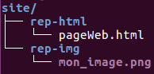

ISN Δ
ISN Δ
« Votre travail fait la différence ! »
 ISN Δ
ISN Δ
« Votre travail fait la différence ! »
Avant de commencer, je voudrais rappeler que je ne suis pas informaticien et que ce que j'écris ici n'engage que moi. Je présente ma façon de voir les choses, et ceci me sert juste à me rafraîchir la mémoire. Je vais donc dans cet article (et les suivants) présenter quelques généralités qui me semblent bon de garder en tête.
Le langage HTML est le langage qui permet de créer des pages Web. Depuis sa création, de nombreuses évolutions ont vu le jour. Nous travaillons aujourd'hui en HTML5. De nouvelles fonctionnalités apparaissent aussi avec l'évolution des navigateurs qui interprètent les documents html et qui s'occupent de les afficher. Les infos qu'on pourra trouver dans ce cours correspondent donc à ma connaisance au jour où j'écris ces pages (forcément !), et bien entendu ce qui est écrit ici risque de devenir désuet dans quelques temps.
Je dois aussi dire en préliminaire qu'un bon développeur Web doit s'occuper des multiples navigateurs existants et de leurs différentes versions pour écrire des documents html qui pourront être lus correctement par tous les utlisateurs. Pour ma part, j'ai tendance à me limiter à tester mes documents avec Firefox dans une version assez récente (voire la plus récente : ma distribution Ubuntu s'occupe des mises à jour). Il est aussi important aujourd'hui de bâtir des pages Web qui pourront s'afficher de "façon jolie" aussi bien sur de grands moniteurs que sur tablettes ou smartphones. Là encore, je pense qu'on peut dans un premier temps d'apprentissage se contenter de tester ses sites sur des écrans d'ordi seulement. Je conseille juste de modifier un peu la taille de la fenêtre du navigateur de temps en temps pour voir comment réagit la page Web en fonction de la taille de l'écran.
Le langage HTML est un langage balisé qui permet de structurer un document.
Un document comprend en général des paragraphes, des titres et sous-titres, des images, des hyperliens, etc.
Le langage HTML permet de signaler qu'on va écrire un titre ou commencer un nouveau paragraphe, etc.
Ceci se fait grâce à des balises notées entre crochets <descriptif_de_la_balise>.
Exemples :
On remarque qu'une balise doit être ouverte comme ceci <descriptif_de_la_balise> puis fermée comme ceci </nom_de_l'element_de_la_balise> (remarquez bien la barre de slash "/" pour fermer une balise).
Le plus simple des éditeurs de texte (gedit, notepad, etc) est suffisant !
Il suffit juste d'enregistrer le fichier avec l'extension .html. Ensuite lorsqu'on ouvre ce fichier avec un navigateur (Firefox, Chrome, Edge, etc.),
c'est le navigateur qui s'occupe d'interpréter le code HTML et d'afficher correctement le document.
Cela dit, il existe de nombreux éditeurs qui proposent des fonctionnalités pour aider le développeur. Chacun pourra faire ses propres recherches pour trouver chaussure à son goût. Pour ma part, j'utilise Atom, logiciel en Anglais mais qui me satisfait pleinement. J'apprécie sa coloration syntaxique, sa complétion automatique (géniale), son aspect modulaire et en plus son côté libre.
Une page html contient au minimum:
Tout ceci ressemble donc au minimum à :
Dès les premiers tests, je pense qu'il est indispensable de contrôler ses fichiers avec le Validateur du W3C
(World Wide Web Consortium, W3C wikipédia).
Cet outil permet de vérifier ("check-er") la qualité de son code, et de le corriger avec les informations données par le validateur.
Bien sûr tout est en Anglais, mais c'est très formateur.
Pour le débutant ça permet de comprendre ses erreurs et surtout de ne pas les reproduire par la suite.
Il faut savoir qu'un code mal écrit sera parfois (voire souvent) interpréter à peu près correctement par les navigateurs qui "devinent" nos erreurs
mais ceci n'est pas du tout satisfaisant et empêche de développer des sites plus complexes par la suite.
Pour passer le Validateur (la bête noire du débutant en HTML) avec succès sans avertissement (warning), il faut un seul titre h1 par page. Il faut donc considérer que les titres des sections de son document commencent au niveau h2. Tous les autres niveaux jusqu'à h6 seront donc utilisés pour les sous-titres.
L'en-tête contient plusieurs balises qui sont optionnelles. On trouvera en général au minimum le titre de la page (il apparaît comme titre d'onglet du navigateur), et le mode d'encodage des caratères (plus d'infos... article à venir !). Le mode utf-8 permet d'encoder tous les caractères utiles à un Français (et même plus).
On remarque que la balise meta est une balise orpheline, c'est à dire qu'elle n'a pas de balise fermante. Il en existe quelques autres (saut de ligne, image). Dans ce cas, on marque la fermeture de la balise à la fin des attributs avec le slash "/".
Le validateur du W3C recommande d'ajouter l'attribut de langue (avec la valeur "fr" pour Français) dans la balise html au début du document, sinon on a le droit à un Warning (avertissement). On commencera donc avant l'en-tête par :
Avec les quelques exemples déjà rencontrés, on peut maintenant préciser la structure générale d'une balise html et apporter le vocabulaire précis.
Une balise est donc notée entre crochets < et >. Elle contient toujours un élément qui indique ce qu'il faut structurer dans le document (h1, head, body, p, etc.) et parfois (souvent !) des attributs dont on précise les valeurs (entre guillemets).
Allez jeter un oeil sur tous les éléments qui existent sur le site de Mozilla Developper Network (MDN).
On peut afficher une image avec l'élément img. La syntaxe générale est la suivante :
Seuls les attributs src et alt sont obligatoires.
L'adresse du fichier image peut être définie de façon relative au fichier html.
Prenons un exemple : l'ensemble des fichiers d'un site Web complet est enregistré dans le répertoire "site", le fichier html est enregistré dans le repertoire "rep-html" (sous-répertoire du répertoire "site") et le fichier image est enregistré dans le repertoire "rep-img" (sous-répertoire du répertoire "site") avec le nom "mon_image.png". La valeur de l'attribut src sera donc : "../rep-img/mon_image.png". Les deux points en début d'adresse permettent de remonter d'un niveau dans l'arborescence des fichiers par rapport à l'adresse du fichier html.
Une petite image pour aider : 
On remarquera que l'élément img est créé dans une balise orpheline (que l'on ferme donc directement en fin de balise).
Les formats d'image utiles pour une page Web sont les images de type :
Un hyperlien, ou tout simplement un lien, est un texte "cliquable" qui permet d'afficher le contenu d'un autre fichier html, ou d'afficher une autre partie du fichier html en cours de lecture (utile pour les documents qui prennent plusieurs pages d'affichage dans le navigateur et dont le "scroll" peut être assez fastidieux).
La syntaxe générale est la suivante :
L'adresse du nouveau fichier html peut être définie de façon relative au fichier html en cours d'édition (voir exemple pour une image) ou peut être une URL (adresse Web).
Pour créer un lien vers une autre partie du même fichier html, il faut au préalable avoir défini "une ancre" pour cette partie du fichier. (Remarque : c'est comme cela que fonctionne le menu de ce document). Une ancre peut se définir dans n'importe qu'elle balise à l'aide de l'attribut id. On pourra par exemple définir une ancre au niveau d'un titre h2 avec le code suivant :
Et ailleurs dans le fichier html on créera un lien interne avec le code suivant :
Remarquez que l'adresse de l'ancre s'appelle avec le caractère dièse # avant le nom de l'ancre.
Notez également que l'on peut créer un lien vers un autre fichier au niveau d'une de ses ancres en ajoutant #nom_ancre à la fin de l'adresse du fichier.
Lorsque l'on crée un lien, le nouveau fichier html remplace le contenu du fichier en cours de consultation. Si on veut ouvrir le nouveau fichier dans un nouvel onglet (conseillé pour les liens externes au site), il faut ajouter l'attribut target avec la valeur "_blank" (ne pas oublier le tiret-bas).
Pour finir, il faut savoir qu'à la place du texte pour le lien, on peut utiliser une image, qui devient donc "cliquable". La flèche en bas à droite de ce document en est un bon exemple : c'est une image qui renvoie vers une ancre définie au début de ce fichier html. Cliquez-dessus pour voir...
Il existe deux sortes de listes :
Chaque nouvel item d'une liste est créé avec l'élément li.
Le code ressemble donc à cela :
Sans mise en forme particulière, votre navigateur affiche le code précédent de cette manière :
Complément : mise en forme avec le langage CSS.
Il existe trois éléments à utiliser pour créer un tableau :
Le code ressemble donc à cela :
Le code précédent donne le tableau suivant :
| en-tête - cellule 1 | en-tête 1 - cellule 2 | en-tête - cellule 3 |
|---|---|---|
| ligne 1 - cellule 1 | ligne 1 - cellule 2 | ligne 1 - cellule 3 |
| ligne 2 - cellule 1 | ligne 2 - cellule 2 | ligne 2 - cellule 3 |
Par défaut, il n'y aucune ligne de tracée (sauf pour les cellules d'en-tête)! C'est laid...
Voici le même tableau avec une mise en forme CSS basique :
| en-tête - cellule 1 | en-tête 1 - cellule 2 | en-tête - cellule 3 |
|---|---|---|
| ligne 1 - cellule 1 | ligne 1 - cellule 2 | ligne 1 - cellule 3 |
| ligne 2 - cellule 1 | ligne 2 - cellule 2 | ligne 2 - cellule 3 |
Complément : mise en forme avec le langage CSS.
Pour se repérer dans le code d'une page html, il est important de mettre régulièrement des commentaires pour expliquer ce que fait le code. Ceci reste vrai pour n'importe quel langage de programmation.
Les commentaires sont utiles pour re-travailler sur un document après quelques temps où l'on n'a pas touché au code source ou pour partager son code avec d'autres programmeurs. En effet, la logique que l'on peut avoir lorsque l'on développe du code n'est pas toujours évidente à comprendre par quelqu'un d'autre, ni même par soi-même parfois !
Les commentaires sont ignorés par le navigateur qui ne les affiche donc pas.
Le commentaire d'un code HTML s'écrit entre <!-- et -->.
Pour bien gérer les différentes sections d'un document Web, il est intéressant de diviser le document en différentes parties. Pour cela, différents éléments sont prédéfinis.
Les balises de type block entrainent un saut de ligne avant et après le contenu décrit par la balise. Ce sont par exemple les balises de paragraphes <p> ou de titres <h>, etc.
Les balises de type inline laissent le contenu dans le flot du document sans aucun saut de ligne. Ce sont par exemple les balises de mise en emphase <em> ou de texte important <strong>.
Petite remarque au passage sur les éléments em ou strong. Par défaut, la plupart des navigateurs écrivent le texte "em" en italique et le texte "strong" en gras, mais il ne faut pas penser pour autant que em=italique et strong=gras : c'est le webmaster qui décide vraiment ce qu'il veut faire pour la mise en forme de ces éléments.
L'élément div définit une balise de type block. Cette balise permet de délimiter une partie du contenu du document html. On lui associe souvent un attribut d'identifiant id pour pouvoir y faire référence ailleurs dans le document html. Cela permet par exemple de créer des ancres pour faire des liens à l'intérieur d'une page Web vers une div particulière.
L'élément span définit une balise de type inline. Cette balise permet de délimiter en général une partie de texte au milieu d'un paragraphe. Cela permet ensuite de faire une mise forme particulière de cet extrait de texte.
Ces éléments définissent tous des balises de type block. Précisons en introduction qu'on peut se passer de ces éléments dans les premières pages que l'on construit, mais qu'une page un peu élaborée les contiendra très probablement. Ce sont les "conteneurs" de parties fréquemment trouvées sur un site.
Ces éléments sont apparus avec HTML5. Ils sont qualifiés d'éléments sémantiques (contrairement à div ou span qui ne sont pas sémantiques) car ils indiquent au navigateur ou au programmeur quel type de contenu ils vont contenir.
header est le conteneur de l'en-tête de la page Web. On y placera souvent un bandeau de présentation du site, une image, un logo, etc.
footer est le conteneur du pied de page de la page Web. On y placera souvent des infos complémentaires sur le site, des liens de messagerie, etc.
nav est le conteneur d'un menu de navigation (très fréquent aussi sur un site complet).
section est le conteneur d'une section de la page Web, càd une partie qui fait sens en elle-même.
article est le conteneur d'un article qui est en général placé dans une section. Une section peut contenir plusieurs articles. Attention au vocabulaire qui n'impose pas qu'on écrive des articles au sens "article de journal" : un article peut être vu simplement comme une sous-partie d'une partie plus générale qu'est la section.
Remarque : la "logique" de l'articulation entre article et section que je viens de présenter peut en fait être inversée : on peut placer des sections dans un article. À chacun sa logique sémantique.
aside est le conteneur d'un "à-côté", càd quelque chose en lien avec un article ou une section mais que l'on place un peu à part.
Une petite image pour résumer tout cela :

Pour finir, je propose une structure de page assez classique reprenant les balises évoquées ici. (Bien d'autres modèles peuvent être développés.)
Plus d'infos sur le w3schools...
Le langage HTML seul structure la page Web mais ne s'occupe d'aucune mise en forme et le navigateur se contente d'afficher du texte en noir sur fond blanc. C'est très rapidement insatisfaisant pour avoir de "jolies" pages Web. La mise en forme est réalisée à l'aide de feuilles de styles CSS (Cascading Style Sheet). Le langage CSS est présenté dans cette partie.
Le principe général consiste à définir des styles de mise en forme pour chaque élément html. Les styles peuvent être définis globalement dans l'en-tête du fichier html ou dans chaque balise mais l'idéal est de définir tous les styles dans un fichier externe (voire dans plusieurs).
Pour lier une feuille de style créée dans un fichier externe au fichier html, il faut ajouter dans l'en-tête du fichier html la ligne suivante:
Pour plus d'infos ou des références plus complètes que ce cours, allez sans hésiter visiter ces sites :